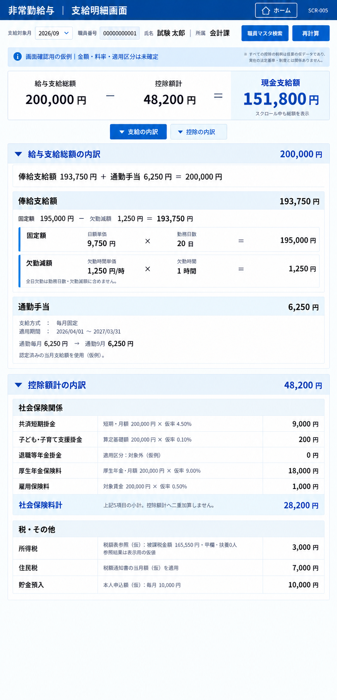

画面要件定義書
2026-10-07の改修仕様：確定要件を適用する。下記の公開版・実測記録は当時の状態として保持し、今回の要件確定だけでアプリ／Dataverseを変更済みとは扱わない。競合する今後の業務仕様は新しい確定要件を優先する。
- 文書版：1.6
- 主対象：現行の単一編集・公開アプリ（App ID
204a48dc-7f23-43dd-b934-4654a3cfa306）。旧試作の項目は適用区分を明示 - 定義範囲：画面一覧、画面遷移、操作、引継ぎ情報、権限制御、全画面共通余白、SCR-002の軽量化・表示編集要件、SCR-005のUI・試算要件、および将来業務E・F・G・給与ルール・遡及差額の画面配置案
- 本書は画面要件を定義するものであり、実装済みであることを示すものではない。
機能要件R15～R23や他画面との関係は要件間マトリクス、決定を待つ画面内事項は未決事項一覧に索引化する。正式な画面条件は本書の各IDを参照する。
1. 画面一覧
| No. | 画面ID | 画面名 |
|---|---|---|
| 1 | SCR-001 | ログイン画面&ホーム画面 |
| 2 | SCR-002 | 職員マスタ検索・詳細 |
| 3 | SCR-003 | 勤務時間報告画面 |
| 4 | SCR-004 | 期末勤勉支給率登録画面 |
| 5 | SCR-005 | 支給明細画面 |
| 6 | SCR-006 | メンテナンス画面 |
ログイン画面とホーム画面は、一つの画面項目（SCR-001）として整理する。以下の画面遷移の起点・戻り先は、SCR-001内のホーム画面とする。ただしMicrosoftの外部サインイン画面をCanvas内で実装済みのログイン画面とみなさない。ログイン画面とホーム画面の内部遷移や認証の詳細は別途定義する。
COMMON-SCREEN-001：上表のSCR-001～006の画面ID・表示名・役割の対応を維持する。SCR-001に外部Microsoft認証の実装を含めない。
2. 画面遷移図
第1階層グループを左、第2階層グループを右に配置する。第1階層には画面1を置き、第2階層には画面2・3・4・5・6を上から順に並べる。この縦の並びは配置順であり、2→3→4→5→6という遷移を追加するものではない。
各画面名のボタンでホーム画面から対象画面へ遷移し、各画面の「ホーム」ボタンでホーム画面へ戻る。双方向矢印は往路・復路をまとめて示し、方向別の操作は「3. 画面遷移・操作一覧」に定義する。
Mermaidのブロック図（block-beta）で階層グループと配置順を指定する。第2階層内の2と5の相互遷移も維持する。2と5の間の線は、画面列の右に余白と配線専用列を設けて迂回させ、画面3・4のブロックを横切らない構成とする。右側の丸印は線の折返し点であり、画面や処理を表さない。画面2と5の両端に向かう矢印で相互遷移を示す。
block-beta
columns 3
block:L1
columns 1
H1["第1階層"]
S1["1. ログイン画面&ホーム画面"]
end
space
block:L2
columns 3
H2["第2階層"]:3
S2["2. 職員マスタ検索"] space R2((" "))
space:3
S3["3. 勤務時間報告画面"] space:2
space:3
S4["4. 期末勤勉支給率登録画面"] space:2
space:3
S5["5. 支給明細画面"] space R5((" "))
space:3
S6["6. メンテナンス画面（管理者のみ）"] space:2
end
S1 <--> S2
S1 <--> S3
S1 <--> S4
S1 <--> S5
S1 <--> S6
R2 --> S2
R2 --- R5
R5 --> S5
style R2 fill:#2563eb,stroke:#2563eb
style R5 fill:#2563eb,stroke:#2563eb
style H1 fill:#dbeafe,stroke:#dbeafe,color:#17365d
style H2 fill:#dbeafe,stroke:#dbeafe,color:#17365d
style L1 fill:#ffffff,stroke:#2563eb
style L2 fill:#ffffff,stroke:#2563eb
ホーム画面のメンテナンス画面ボタンは、管理者以外には非活性で表示する。画面2～5で扱う職員データの範囲は「5. 権限制御」に従う。
3. 画面遷移・操作一覧
3.1 ホーム画面からの遷移
ホーム画面に、画面2～6の各画面名を表示したボタンを設置する。
| 遷移元 | ボタン名 | 操作 | 遷移先 | 条件 |
|---|---|---|---|---|
| SCR-001：ホーム画面 | 職員マスタ検索 | クリック | SCR-002：職員マスタ検索・詳細 | ログイン済み |
| SCR-001：ホーム画面 | 勤務時間報告画面 | クリック | SCR-003：勤務時間報告画面 | ログイン済み |
| SCR-001：ホーム画面 | 期末勤勉支給率登録画面 | クリック | SCR-004：期末勤勉支給率登録画面 | ログイン済み |
| SCR-001：ホーム画面 | 支給明細画面 | クリック | SCR-005：支給明細画面 | ログイン済み |
| SCR-001：ホーム画面 | メンテナンス画面 | クリック | SCR-006：メンテナンス画面 | ログイン済みかつ管理者。管理者以外はボタン非活性 |
COMMON-NAV-001：上表の5経路すべてをホームからの遷移として追跡する。SCR-006の活性条件はCOMMON-AUTH-002を併用する。
3.2 ホーム画面へ戻る遷移
画面2～6の各画面に「ホーム」ボタンを設置する。
| 遷移元 | ボタン名 | 操作 | 遷移先 |
|---|---|---|---|
| SCR-002：職員マスタ検索・詳細 | ホーム | クリック | SCR-001：ホーム画面 |
| SCR-003：勤務時間報告画面 | ホーム | クリック | SCR-001：ホーム画面 |
| SCR-004：期末勤勉支給率登録画面 | ホーム | クリック | SCR-001：ホーム画面 |
| SCR-005：支給明細画面 | ホーム | クリック | SCR-001：ホーム画面 |
| SCR-006：メンテナンス画面 | ホーム | クリック | SCR-001：ホーム画面 |
COMMON-NAV-002：上表の5経路すべてについてホームへの戻りを追跡する。SCR-006からの戻りは管理者画面に到達できる条件で確認する。
3.3 職員マスタ検索と支給明細画面の相互遷移
| 遷移元 | 遷移先 | 引き継ぐ選択情報 | 操作 |
|---|---|---|---|
| SCR-002：職員マスタ検索・詳細 | SCR-005：支給明細画面 | 職員番号、支給対象月 | ボタン名・操作方法は別途定義 |
| SCR-005：支給明細画面 | SCR-002：職員マスタ検索・詳細 | 職員番号、支給対象月 | 「職員マスタ検索」ボタンをクリック |
対象職員は、ログインアカウントに紐づく所属部署と一致する非常勤職員に限定する。
COMMON-NAV-003：上表のSCR-002とSCR-005の双方向遷移、職員番号・対象月の受渡し、および所属制限を一組として追跡する。SCR-002からのボタン名・操作方法は6章の未決事項として残す。
4. 画面間で引き継ぐ情報
| 適用範囲 | 情報の区分 | 項目 | 要件 |
|---|---|---|---|
| ログイン後の全画面間 | ログイン職員のアカウント情報 | 氏名、メールアドレス | 画面遷移後も同じログイン職員の情報を保持する |
| SCR-002 ⇄ SCR-005 | 画面で選択した職員情報 | 職員番号、支給対象月 | 選択した職員・支給対象月を遷移先へ引き継ぐ |
ログイン職員のアカウント情報と、画面で選択した非常勤職員の情報は区別して扱う。所属部署・管理者区分はログインアカウントに紐づけて権限判定に使用し、その取得元・判定方法は別途定義する。
COMMON-CONTEXT-001：全画面間でログイン職員の氏名・メールアドレスを同一主体として保持する。COMMON-CONTEXT-002：SCR-002とSCR-005の間で選択職員番号・対象月を引き継ぎ、ログイン職員の属性と混同しない。
5. 権限制御
| 対象 | 要件 |
|---|---|
| 閲覧可能なデータ | ログインアカウントに紐づく所属部署と、非常勤職員の所属部署が一致するデータのみ閲覧可能 |
| 編集可能なデータ | 同じ所属部署の非常勤職員データのみ編集可能。各画面で提供する編集機能の詳細は別途定義 |
| 職員データを伴う画面遷移 | 同じ所属部署の非常勤職員を対象とする場合のみ遷移可能。画面2と画面5の相互遷移にも適用 |
| メンテナンス画面への遷移 | 管理者のみ遷移可能 |
| ホーム画面のメンテナンス画面ボタン | 管理者には活性、管理者以外には非活性で表示 |
所属部署による制限は、検索結果・一覧表示・対象職員の参照・更新・画面遷移に共通して適用する。画面遷移で引き継いだ職員番号だけを根拠に、別部署の職員データを表示・編集できないこと。
管理者が他部署の職員データを扱える例外は、現時点では定義しない。管理者であることによる所属部署制限の解除は、本書の要件に含めない。
COMMON-AUTH-001：上表の閲覧・編集・職員を伴う画面遷移と、検索／一覧／更新の所属部署制限をまとめて追跡する。COMMON-AUTH-002：SCR-006への管理者限定遷移とホームのボタン活性／非活性を追跡する。ボタンの表示状態だけでサーバー側の権限確認を代替しない。管理者も所属部署制限の例外とはしない。
6. 別途定義する事項
- モーダル、条件分岐、外部処理の詳細。本書で確定した所属部署・管理者の制限を前提とする。
- SCR-005は8章を適用する。その他の画面の入力項目・表示項目・詳細機能は別途定義。
- SCR-002からSCR-005へ遷移する際のボタン名・操作方法。逆方向は8章に定義。
- ログイン認証、所属部署・管理者区分の取得元と判定方法。
- SCR-002の未保存データを伴う遷移は9.7に定義。その他の画面における未選択・未保存時の扱いは別途定義。
7. 変更履歴
| 文書版 | 変更内容 |
|---|---|
| 1.6 | 人給連携モック承認・I1～I12の画面と操作要件を追加（改修先、実装未検証） |
| 1.5 | E・F・G・遡及差額の状態遷移と、Fの認定期間による終了を定義 |
| 1.4 | 将来業務の給与班・局担当者・職員本人の対象範囲と、SCR-006ルール管理権限を定義。現行の権限設定と区別 |
| 1.3 | E・F・給与ルール管理と遡及差額の配置を追加。独立した遡及差額画面は将来対象であり、現行6画面は維持 |
| 1.2 | 将来業務Gの決定結果登録・確認を社会保険・税固定控除の既存タブへ配置。現行アプリの実装とは区別 |
| 1.1 | 1～5章の既存要件に画面一覧・往復遷移・対象受渡し・所属／管理者制限の追跡IDを8件付与。要件の内容と未決事項は維持 |
| 1.0 | 単一アプリの測定・公開判定へ旧安定版反映文言を修正。未採番だったSCR-001上部操作・全画面比率・軽量化測定にIDを追加。外部サインインと画面内機能を区別 |
| 0.9 | 全画面共通余白、SCR-002のタブ・表・検索結果・編集・給与簿表示、SCR-005のスクロール起点を追加。給与簿を常時読み取り専用とした。 |
| 0.8 | SCR-001スマホ用所属選択と上部操作、SCR-002の固定ヘッダー・スクロール・検索一覧・配色・操作ボタン・取得日時を追加。 |
| 0.7 | SCR-002軽量化要件を追加。左検索・右詳細を維持し、6タブ、共通2列詳細、通勤HTML、基準給与簿163項目の動的支給月列、画面領域比率、Screen1改名方針を定義。 |
| 0.6 | SCR-005の修正画像、配置・計算・項目対応・内蔵データ・操作・YAML受入要件を追加。控除見出し直下の加算式を削除。 |
| 0.5 | GitHubでのMermaid構文エラーを修正。折返し点の空文字ラベルを空白1文字へ変更。 |
| 0.4 | 画面2と5の相互遷移線を、右側の配線専用列と折返し点を経由する経路へ変更。画面の配置順・遷移要件は維持。 |
| 0.3 | 階層グループを導入。左に第1階層（画面1）、右に第2階層（画面2～6）を置き、第2階層を2・3・4・5・6の順に縦配置。既存の遷移・権限制御は維持。 |
| 0.2 | 画面2を画面3の左へ配置。ホームの各画面名ボタン、各画面のホームボタン、アカウント・選択職員情報の引継ぎ、所属部署制限、管理者限定メンテナンス遷移を定義。別途定義事項を整理。 |
| 0.1 | 指定された6画面と7方向の遷移を初版として定義。 |
8. SCR-005 支給明細画面：Canvas UI作成要件
8.1 適用範囲と参照資料
2026/09/18の修正デザインを、次回の貼付用YAML／Power Fx作成の基準とする。今回の成果は要件と画像であり、YAML実装・Studio検証・公開・Dataverse変更は未実施。
- 確定配置のデザイン案 PNG
- B案デザイン基準
- 旧2画面プロトタイプ：勤務日数・欠勤時間の集計方法を参考にする。SCR-005の旧レイアウトと「基本額−欠勤控除＋超過勤務手当」の合計は本節に置き換える。旧YAMLが本節対応済みであるとは扱わない。
- 通勤テーブル定義、基準給与簿項目定義

画像は配置の参考。数値・文字列・データ型・状態・操作は本書を正とし、画像を背景に貼る実装ではなく、各表示をCanvasコントロールとして構成する。画像の職員番号の桁数を転記せず、実装では12桁文字列を使用する。

8.2 表示順・構成
| 要件ID | 領域 | 表示・構造 |
|---|---|---|
| SCR005-UI-001 | ヘッダー | 「非常勤給与 ｜ 支給明細画面」、ホーム、画面ID「SCR-005」。画面IDは右上のみ |
| SCR005-UI-002 | 対象・操作 | 支給対象月、職員番号、氏名、所属、職員マスタ検索、再計算。氏名・所属・金額・単価は参照表示。対象職員は検索画面で選択する |
| SCR005-UI-003 | 仮例の案内 | 内蔵データでは上部に「画面確認用の仮例｜金額・料率・適用区分は未確定」。下端には同趣旨の補記を置かない |
| SCR005-UI-004 | 上部サマリー | 「給与支給総額 − 控除額計 ＝ 現金支給額」を金額付きで表示。現金支給額を強調。本文スクロール中も見える固定領域に置く |
| SCR005-UI-005 | 内訳操作 | 「支給の内訳」「控除の内訳」で対応する本文の開閉を切替。初期は両方展開。開閉状態は文字・アイコンでも示す |
| SCR005-UI-006 | 支給見出し | 「給与支給総額の内訳」と右端に給与支給総額 |
| SCR005-UI-007 | 支給の式 | 見出しの直下、俸給支給額の前の白背景に「俸給支給額 193,750円 ＋ 通勤手当 6,250円 ＝ 200,000円」。実装では動的な金額 |
| SCR005-UI-008 | 俸給支給額 | 見出しに俸給支給額。内部に「固定額 − 欠勤減額 ＝ 俸給支給額」、その下に固定額と欠勤減額の2段を入れ子で表示 |
| SCR005-UI-009 | 固定額 | 項目名、日額単価、×、勤務日数、＝、算出額 |
| SCR005-UI-010 | 欠勤減額 | 項目名、欠勤時間単価、×、欠勤時間、＝、算出額。「全日欠勤は勤務日数・欠勤減額に含めません」の案内 |
| SCR005-UI-011 | 通勤手当 | 見出しと当月額、支給方式、適用期間、認定済み当月支給額の参照根拠。毎月固定の例は「通勤毎月 6,250円 → 通勤9月 6,250円」 |
| SCR005-UI-012 | 控除見出し | 「控除額計の内訳」、対象区分「当給与期間分」、右端に控除額計。直下は「社会保険関係」。間に控除額の足し算式を置かない |
| SCR005-UI-013 | 社会保険関係 | 8.4の先頭5項目を「項目名／算出根拠／金額」の3列で表示し、最後に社会保険料計の小計 |
| SCR005-UI-014 | 税・その他 | 所得税、住民税、貯金預入を同じ3列で表示。貯金預入が本文の最終行 |
| SCR005-UI-015 | 縦スクロール | 支給対象月から「職員マスタ検索」ボタンまでの対象・操作欄はスクロール領域の外に置く。その欄より下の内訳本文を縦スクロールできるようにする。上部サマリーは従来どおり固定し、最後の貯金預入まで到達できること |
表示しないもの： 通勤手当の後の給与支給総額カード、税・その他の後の控除額計カード、控除見出し直下の加算式、最下部の現金支給額カード、最下部の「計算根拠・料率は仮例～定義します」の補記、右下の画面ID。上部サマリー・各内訳見出しの金額・社会保険料計は維持する。
8.3 計算・集計と表示の分離
| 要件ID | 項目 | 計算・扱い | 仮例 |
|---|---|---|---|
| SCR005-CALC-001 | 勤務日数 | 選択職員・対象勤務月の登録済み日別明細のうち通常勤務分が0より大きい日を数える。1日1件を前提に重複を検出 | 20日 |
| SCR005-CALC-002 | 固定額 | 日額単価 × 勤務日数。1日所定7時間45分＝465分 | 9,750 × 20＝195,000円 |
| SCR005-CALC-003 | 欠勤減額 | 職員基本情報の欠勤時間単価 × 勤務した日の控除対象欠勤分合計 ÷ 60 | 1,250 × 1時間＝1,250円 |
| SCR005-CALC-004 | 俸給支給額 | 固定額 − 欠勤減額 | 193,750円 |
| SCR005-CALC-005 | 給与支給総額 | 俸給支給額 ＋ 通勤手当 | 200,000円 |
| SCR005-CALC-006 | 社会保険料計 | 本試作では8.4の先頭5項目の合計。独立した追加控除項目ではない | 28,200円 |
| SCR005-CALC-007 | 控除額計 | 社会保険料計 ＋ 所得税 ＋ 住民税 ＋ 貯金預入。計算は行うが加算式の行は画面に出さない | 48,200円 |
| SCR005-CALC-008 | 現金支給額 | 給与支給総額 − 控除額計 | 151,800円 |
- 全日欠勤は勤務日数から除外し、欠勤減額にも重ねて含めない。実勤務20日と別に全日欠勤日がある場合、固定額は日額×20日。
- 勤務日の不足は欠勤として確認・記録された分を対象とする。年休等の有給区分を無条件に欠勤へ置換しない。旧試作の勤務日は通常勤務分＋欠勤分＝465分を前提とする。
- 欠勤時間単価は独立した値であり、画面で日額÷7.75を再計算しない。未反映タスク #51に従い、次回の職員基本テーブル編集時に追加する。実テーブル反映・読戻し証跡が揃うまで完了にしない。
- 分は内部で整数として保持し、表示は「1時間」「0.5時間」等とする。「60分÷60」は表示しない。循環小数は「約」で区別し、表示値を再計算に使わない。
- 端数処理は途中では行わず、最終合計額の円未満を切り捨てる。本試作では最終合計を現金支給額とし、非負の計算結果に最後に一度だけ
RoundDown(現金支給額の未丸め値, 0)を適用する。中間値に小数があるときは小数または概数表示であることを明示し、整数の厳密等式に見せない。 - 控除の本番料率・対象区分・課税範囲・法定の個別端数処理は未確定。画像の率で本番計算を確定しない。負の最終額や返納・追給の業務処理も別途定義し、本試作では対象外の状態を表示する。
- 最新指定の給与支給総額は俸給支給額＋通勤手当。旧試作の超過勤務手当は今回の画面・合計には加えない。将来の支給項目拡張は別要件とする。
8.4 控除の項目名・根拠・データ対応
名称は基準給与簿の「〇〇・当給与期間分」の〇〇を使用する。「返納・追給分」は混在させない。以下の論理名は既存定義の参照先であり、試作コレクションから実テーブルへの接続実装を意味しない。
| 表示名 | 既存論理名 | 画面の算出根拠（すべて仮例） | 金額 |
|---|---|---|---|
| 共済短期掛金 |
crb3c_mutual_short_current
|
短期・月額 200,000円 × 仮率4.50% | 9,000円 |
| 子ども・子育て支援掛金 |
crb3c_mutual_childcare_current
|
算定基礎額 200,000円 × 仮率0.10% | 200円 |
| 退職等年金掛金 |
crb3c_retirement_contribution_current
|
適用区分：対象外（仮例） | 0円 |
| 厚生年金保険料 |
crb3c_pension_insurance_current
|
厚生年金・月額 200,000円 × 仮率9.00% | 18,000円 |
| 雇用保険料 |
crb3c_employment_insurance_current
|
対象賃金 200,000円 × 仮率0.50% | 1,000円 |
| 社会保険料計 |
crb3c_social_total_current
|
上記5項目の小計。控除額計へ二重加算しない | 28,200円 |
| 所得税 |
crb3c_income_tax_current
|
税額表参照（仮）：被課税金額165,550円・甲欄・扶養0人。参照結果は表示用の仮値 | 3,000円 |
| 住民税 |
crb3c_resident_tax_current
|
税額通知書の当月額（仮）を適用 | 7,000円 |
| 貯金預入 |
crb3c_savings_current
|
本人申込額（仮）：毎月10,000円 | 10,000円 |
対象外の項目も行を残し、0円と対象外の理由を示す。欠落データは0円と区別する。基準給与簿には介護掛金・健康保険料等の他項目もあるが、この9行のデザインには含めない。本番の社会保険料計を常にこの5項目だけで再計算できるとは扱わず、対象項目の拡張・既存小計との整合を本番接続前に定義する。
算出根拠は金額から逆算して捏造しない。基準給与簿の金額列だけでは料率・通知書・税額表の参照条件が分からないため、内蔵試作では根拠情報も別途保持する。
8.5 データ契約と通勤手当
今回のUIはアプリ内蔵の架空データで作成可能とする。未定義の実テーブル作成は行わない。共通の初期化箇所にデータを集約し、ラベルやボタンへ同じ数値を重複直書きしない。
| データ群（試作名） | 必要な項目・型 |
|---|---|
職員 colStaff
|
StaffNo：12桁文字列、氏名・所属：文字列、DailyRate・AbsenceHourlyRate：数値、所定勤務分：整数465 |
勤務 colAttendance
|
StaffNo、勤務日：Date、RegularMinutes・AbsenceMinutes：整数、日区分、登録版 |
月登録 colMonths
|
StaffNo、勤務月：月初Date、登録済み状態・登録版。0日で登録した月と未登録月を区別 |
通勤 colCommute
|
職員番号、支給対象月、認定ID、支給方式、適用開始日・終了日、通勤毎月、対象月の支給予定額、根拠表示 |
控除 colDeductions
|
職員番号、支給対象月、項目コード、表示順、グループ、項目名、適用状態、根拠種別、基礎額・率（任意）、参照条件／通知書等の根拠文字列、金額。社会保険料計は別途導出し二重集計しない |
| 計算結果 | 対象キー、入力登録版、未丸めの固定額・欠勤減額・俸給・通勤・給与総額・控除小計・控除総額・現金支給額、最終切捨て値、計算状態 |
- 試作では支給対象月と勤務月を同月で関連付ける。本番の締め・翌月支払等の対応は別途定義する。
- 通勤の既存列：支給方式
crb3c_method、適用開始日crb3c_startdate、適用終了日crb3c_enddate、通勤毎月crb3c_monthly、通勤9月crb3c_month09。他月も既存の月別列を使用する。 - 9月仮例：毎月固定、適用2026/04/01～2027/03/31、通勤毎月6,250円、通勤9月6,250円。給与総額へは当月額を一度だけ加算する。2つの6,250円を加算しない。
- 半年定期・毎月精算をこの毎月固定式で代替しない。月途中の変更、複数認定、期間重複の採用規則は未確定として、該当時は要確認にする。未登録と認定済み0円を区別する。
- 選択キーは職員番号＋対象月。氏名では結合しない。選択・取得・再計算にも本書5章の所属制限を適用し、ログイン者情報と対象職員情報を混同しない。
8.6 操作・状態
| 要件ID | 操作・状態 | 振る舞い |
|---|---|---|
| SCR005-ACT-001 | ホーム | SCR-001へ戻る。ログイン者情報を保持 |
| SCR005-ACT-002 | 職員マスタ検索 | SCR-002へ遷移し、選択職員番号・支給対象月を引き継ぐ。SCR-002から戻る時も選択を反映 |
| SCR005-ACT-003 | 初期表示 | 有効な対象があればデータ確認後に計算表示。未選択なら選択案内を出し再計算を無効化。無関係の職員を自動選択しない |
| SCR005-ACT-004 | 再計算 | 現在の内蔵データから検証・再計算。処理中は連打を防止。データの登録やDataverseへの書込みは行わない |
| SCR005-ACT-005 | 対象・版変更 | 職員・対象月・勤務登録版が変わった時点で旧結果を無効化し、再計算を促す。旧結果を新しい対象の数値として残さない |
| SCR005-ACT-006 | 未登録・不足・失敗 | 未登録勤務、欠勤単価未設定、通勤・控除データ欠落、重複等は理由を表示し、総額は「—」。未登録を0円扱いしない |
| SCR005-ACT-007 | 折りたたみ | 支給・控除を独立して開閉。見出し金額と上部サマリーは残す。閉じた領域の高さ・空白を除去し、Tab対象から外す |
| SCR005-ACT-008 | 金額0 | 登録済みかつ必要情報が揃った0円は「0円」。欠勤なしでも欠勤0時間・減額0円の行を残す |
この画面は表示・試算用とし、保存・確定・支払実行は含めない。内蔵データはアプリ終了・初期化で失われる試作であることを実装説明に記載する。
8.7 YAML構成・デザイン・受入条件
- YAMLはPower Appsへ貼付できるコンテナー単位で作り、初期化Power Fx、必要変数、配置先、依存する遷移先画面を併記する。内部名は既存
scrPayrollとの対応を明示する。コントロール版・対応プロパティは実装時のStudioで確認する。 - 固定のヘッダー／支給対象月から「職員マスタ検索」ボタンまでの対象・操作欄／サマリー領域と、その下から縦スクロールする内訳領域を分ける。内訳は縦の自動レイアウト、各計算行は横配置を基本とし、固定座標だけで長文を切らない。画像は全体像を示すもので実際の画面高さではない。
- B案の色・余白・文字規則を共通トークンとして使用する。モダンコントロールを優先し、画像の強い太字を全項目へ転記しない。金額は右寄せ、番号は文字列、対象月はyyyy/MM、期間日付はyyyy/MM/dd。
- 標準デスクトップ幅1366pxを基準に、狭幅では操作列・式を折り返す。本文文字を縮小して押し込まない。固定領域が本文を覆わず、最終の貯金預入までスクロール到達できること。200%拡大・Tab移動・フォーカス・読み上げ・配色も確認する。
- 数値は数値型で計算し、ラベルだけで通貨書式・単位を付ける。式のオペランドと各金額は共通の計算結果を参照する。
- 実装時の受入ケース：①仮例200,000−48,200＝151,800、②欠勤なし、③全日欠勤を勤務日数と欠勤控除へ二重計上しない、④一部欠勤30分、⑤中間小数と最終切捨て、⑥未登録と登録済み0の区別、⑦対象・登録版変更時の旧結果消去、⑧社会保険料計の二重加算防止、⑨折りたたみ時の空白除去、⑩削除指定6要素の非表示、⑪他部署の参照拒否、⑫長い根拠文・画面末尾の見切れ防止、⑬対象・操作欄が本文スクロールで流れず、欄の下から末尾までスクロールできること。
- 完了判定はYAML構文だけでなくStudio貼付・コンパイル・操作・見た目の確認を含める。本要件追記時点ではこれらは未実施。
9. SCR-002 職員マスタ検索・詳細：軽量化要件
9.1 適用範囲と優先順位
本節は2026-09-24に確定したSCR-002の軽量化要件であり、同画面について本書、要件定義書、基本設計書、詳細設計書、v1.21給与詳細・認定簿軽量化の旧配置と競合する場合は本節を優先する。現行実装の検証記録は履歴として保持し、本節の実装完了を示すものではない。SCR-005支給明細画面は別機能であり、本節の基準給与簿へ統合しない。
9.2 画面構成
| 要件ID | 領域 | 要件 |
|---|---|---|
| SCR002-LT-001 | 画面名 | Power Apps内部スクリーン名はScreen1からscrStaffMasterSearchへ変更する。画面表示名は「SCR-002 職員マスタ検索・詳細」とする。実装時にStartScreen、Navigate、クロススクリーン参照、テスト、配布スクリプトを一括照合する。既存コントロール名末尾111は一括改名しない |
| SCR002-LT-002 | 左領域 | 現行の開閉式職員検索・検索結果一覧を維持する。職員選択だけでは自動で閉じず、検索条件、結果、選択職員、ページ位置を保持する |
| SCR002-LT-003 | 右領域 | 選択職員サマリーと、基本情報、勤務条件、通勤、社会保険、税固定控除、給与簿の6タブを表示する。従来の「給与」表示は「給与簿」へ改称する |
| SCR002-LT-004 | タブ切替 | 基本情報、勤務条件、通勤の選択レコード詳細、社会保険、税固定控除は共通の詳細ギャラリーをタブに応じて使い回す。6区分の完成した非表示パネルを同一スクリーンに保持しない |
| SCR002-LT-005 | 履歴 | 履歴を持つ区分は、複数履歴の場合は短い履歴選択行で対象レコードを選び、1件の場合は選択行を省略し、選択レコードの全項目を詳細ギャラリーへ表示する。複数履歴、現行・過去・予定、0件を識別できること |
| SCR002-LT-006 | 2列表示 | 基本情報から税固定控除までの5タブは、青背景の項目名と白背景の値を一組とし、横に二組ずつ並べる。見た目・配置を共通化し、項目・値・編集可否はタブごとに渡す。長文も黙って省略せず、折返し、行高、Tooltip等で全文確認可能にする。欠け・重なり・著しい可読性低下が実機で確認された項目だけ、根拠を記録して全幅表示にできる。給与簿は項目名・値の一組を縦に並べ、表示対象月の複数レコードだけ値列を横方向へ増やす。項目名の青・値の白という配色を共通化する |
| SCR002-LT-007 | 0件・切替 | 検索0件、職員切替、履歴0件では以前の職員・履歴・認定ID・給与値を残さない。職員番号は12桁文字列キーとして扱う |
9.2.1 SCR-001 ホームの操作配置
| 要件ID | 要件 |
|---|---|
| SCR001-UI-001 | 画面遷移ボタンおよび確認用の権限切替・所属選択を上部へ集約する。スマートフォンのPlayer上でも「確認用所属」をタップして候補を開き、選択・確定できること。表示のみで選択不能なプルダウンを許容しない |
| SCR001-UI-002 | 確認用所属の切替は既存の閲覧・編集権限を拡張する根拠にしない。ログイン者の所属に基づく権限判定と確認用UIの値を区別する |
9.2.2 SCR-002 画面配置と操作
| 要件ID | 要件 |
|---|---|
| SCR002-UI-001 | 「非常勤職員マスタ検索」のヘッダーは固定し、画面ID「SCR-002」とデータ取得日時を表示する。ホームを画面IDの左側に置く |
| SCR002-UI-002 | ヘッダー直下のボタン群、選択職員のサマリー・基本情報および詳細を同一の縦スクロール対象とする。検索一覧の内部スクロール、給与表の横スクロールは必要に応じて維持する |
| SCR002-UI-003 | 文字サイズ切替、支給明細への遷移、「詳細表示」、読み取り／編集モード切替、「保存」など存続する操作をヘッダー直下の操作領域へ集める。操作領域は本文とともにスクロールする。ホームは固定ヘッダー右端の画面IDの左隣に移し、旧ホーム右の独立した年月選択は削除する。給与簿内の表示開始月・表示終了月は残す。既存の「変更を破棄」ボタンは削除する。表示条件と権限制御は既存要件に従う |
| SCR002-UI-004 | 左の検索条件を縦一列に配置し、「職員を検索」入力欄に虫眼鏡アイコンを付ける。検索結果は氏名の下に職員番号、在籍・退職・採用前の状態の下に部署略称を表示する。状態は色分けし、文字でも識別できるようにする |
| SCR002-UI-005 | 右詳細の背景とギャラリー見出しは社会保険履歴編集画面の参照画像に合わせ、選択と入力値の読みやすさを確保する。勤務条件・通勤・社会保険・税固定控除の長文履歴カードは置かず、複数履歴があるときだけ短い選択行を表示する。履歴一覧へ戻るボタンおよび「保存前、編集対象：テストレコード」のフッターは配置しない |
| SCR002-UI-006 | 「最新データを読込」および「検索結果をTSVで出力」ボタンを削除する。画面を開いたままの自動定期更新は行わず、利用者向け画面にブラウザー更新の手順を記載しない |
| SCR002-UI-007 | ヘッダーの「データ取得日時」は、表示対象の初回取得、職員切替時の詳細取得、保存成功後の再取得が成功した時点で更新する。失敗時は時刻のみ更新せず、エラーを明示する。日時は利用者の表示タイムゾーンで示し、対象データを誤認させない |
9.3 通勤タブとHTML認定簿
| 要件ID | 要件 |
|---|---|
| SCR002-COM-001 | 通勤タブに認定ID、適用期間、支給方式、主要金額等の認定レコード一覧を表示し、利用者が1件を選択する |
| SCR002-COM-002 | 有効な選択レコードがある場合だけ「認定簿表示」を有効化する。クリック時に選択認定GUIDと選択職員の一致を再検証し、別ブラウザータブで正式HTML認定簿を開く |
| SCR002-COM-005 | 「認定簿表示」は通勤タブの右上に置く。現行の「選択職員の認定簿を表示」は改名・移動し、認定レコード未選択時は無効にする |
| SCR002-COM-003 | HTML認定簿はA4横2ページをブラウザー印刷から1PDFとして保存でき、Dataverse権限、NULLと0、別職員・旧選択の再利用防止を適用する |
| SCR002-COM-004 | HTML版を正式入口として残し、Canvas内の旧認定簿2ページ、PDFViewer、PDF生成・保存操作、旧PoC入口は軽量化実装時にアプリから削除する。検証記録と旧ソースはGit履歴・検証資料として残すが、正式機能版へ再配置しない |
9.4 基準給与簿
「給与簿」タブから開く基準給与簿は、SCR-005支給明細とは別の職員台帳機能とする。件数の直下から最初の「給与期間対象年」を表示し、旧800pxの空白を置かない。
| 要件ID | 要件 |
|---|---|
| SCR002-PAY-001 | 基準給与簿の163項目を定義順どおり縦方向へ表示し、重複・欠落を許さない |
| SCR002-PAY-002 | 利用者が表示開始月・表示終了月（年月）を選択する。開始月≦終了月の範囲内で、登録済み給与レコードの支給年月日から得た月だけを横方向へ動的表示する。年度や12か月に固定せず、範囲変更に追随する |
| SCR002-PAY-003 | 範囲内に登録レコードのない月は列を表示しない。同じ支給月の複数レコードは正常なものをすべて別列として表示し、月単位の合算・上書き・無条件Firstを行わない。各列に支給年月日、番号、レコード識別子等を示して区別できるようにする。登録の可否条件は登録処理の仕様で別途精査する |
| SCR002-PAY-004 | 登録済みレコード内の0、負数、空欄を区別する。未登録月は列を作らず、対象範囲の登録レコードが0件なら空状態を表示する。163項目×表示レコード列の末尾へ到達でき、見出しとセルの対応を誤認しないこと |
| SCR002-PAY-005 | 163×表示レコード数のセルコントロールを静的作成せず、縦ギャラリーと横ギャラリー等の反復構造を使用する。ただし項目の縦方向はギャラリー内に独立したスクロールを設けず、画面の内容領域と一緒に全163項目の末尾まで縦スクロールできること。月別の横スクロールは維持する。支給年月日が空欄・解釈不能な行を黙って範囲外として捨てず、例外件数と対象を確認できるようにする |
9.5 全画面共通の画面領域比率
COMMON-LAYOUT-001：Power Appsが描画する親領域内に業務画面コンテナーを置き、以下の比率をSCR-001～SCR-006へ共通に適用する。比率の定義元を共通化し、画面ごとに定数を複製しない。
比率はブラウザー外枠やOSウィンドウ自体の寸法を制御する要件ではない。
| 方向 | 比率 | 算出 |
|---|---|---|
| 横 | 左余白4：業務画面56：右余白4 |
X=Parent.Width*4/64、Width=Parent.Width*56/64
|
| 縦 | 上余白2：業務画面26：下余白2 |
Y=Parent.Height*2/30、Height=Parent.Height*26/30
|
1366×768、1920×1080を主要条件とし、幅900、1100、1600、ブラウザー200％、標準／大きな文字でも、左検索、右詳細2列、タブ、動的月列、主要操作の欠け・重なり・到達不能がないことを確認する。
9.6 軽量化の受入条件
SCR002-PERF-001：単一アプリの改修直前・直後を同じ環境、データ量、操作と計測条件で比較し、実測値と未計測項目を残す。過去の全6画面816、SCR-002相当657コントロールは旧版の参考値であって、現在の単一アプリの改修直前値には転記しない。
- 改修直前に現行の単一App IDから全6画面とSCR-002相当のコントロール数を読戻し、基準値として保存する。
- 改修後はコントロール型別・画面別に再集計し、SCR-002相当は150～210を設計目標とする。目標未達だけで不合格にはしないが、差分と残存理由を記録する。
- App checkerの「1画面のコントロールが多すぎる」を再確認し、警告が残る場合は対象画面・件数・追加分割の要否を記録する。
- 起動、検索、職員切替、タブ切替、履歴選択、HTML認定簿起動、基準給与簿の初期表示・横移動を改修前後で測定する。
- 文書更新だけでは実装済み・軽量化完了と判定しない。現在の単一アプリで保存版読戻し、同一App IDの公開版と回帰試験を区別して判定する。別の安定版アプリへの反映を完了条件としない。
9.7 画面表示・編集の追加要件（2026-09-25確定）
| 要件ID | 要件 |
|---|---|
| SCR002-UI-008 | 6タブは選択・非選択が形、枠、背景、文字で判別できるタブ型UIとし、通常の操作ボタン群と見分けられること。添付の選択タブ画像を参考とし、色だけに選択状態を依存しない |
| SCR002-UI-009 | 検索結果で選択した職員は、氏名・職員番号・在籍／退職区分・部署略称を含む行全体を同じ選択用の青背景でつなぐ。氏名と職員番号の間、状態と部署略称の間の白い帯をなくし、職員番号欄だけ異なる背景を残さない。未選択の行と区別できる左マーカーと選択状態表示を維持する |
| SCR002-UI-010 | タブ内冒頭の不要なテキストボックスを削除する。履歴レコードの選択に必要な操作と、その識別情報は維持する |
| SCR002-EDIT-001 | SCR-002を開いたときは読み取りモードとする。読み取り／編集モードの切替操作を置き、編集モードで基本情報、勤務条件、通勤、社会保険、税固定控除の編集可能な値を変更できる。給与簿タブは両モードとも全項目読み取り専用とする |
| SCR002-EDIT-002 | 保存時は変更された編集可能項目を、選択職員・選択履歴レコード・所属部署権限を確認したうえで対応するDataverseレコードへ反映する。保存成功後に再取得して読み取りモードへ戻す。給与簿への書込みは行わない。実データ接続や更新先が未整備の項目を、保存に成功したように扱わない |
| SCR002-EDIT-003 | 編集中にタブを移っても未保存の入力を保持する。未保存の変更があるまま別画面への遷移または別職員の選択を試みたら、「変更を破棄して移動しますか」を確認し、続行を選んだ場合だけ破棄・移動する。キャンセルなら現在の職員と入力を保持する。保存失敗時も入力を保持し、エラーを示す |
| SCR002-EDIT-004 | 画面上の「変更を破棄」ボタンは置かない。読み取りモードへの切替で未保存の変更が失われる場合にも破棄確認を出す |
| SCR002-PAY-006 | 「給与簿」の表示開始月と表示終了月のそれぞれの入力欄の直横に、対応するカレンダー切替操作を配置する |
| SCR002-PAY-007 | 給与簿末尾の「セルを選択すると、ここに全文を表示します。」欄を削除する。長文・識別子の全文確認はセルの折返しや補助表示で確保する |
| SCR002-PAY-008 | 「項目（163項目）」行とその隣の欄を削除する。給与期間対象年以降は独立した縦スクロールを設けず、画面の内容領域全体で163項目を縦に移動できるようにする。項目名と各支給月列の対応を保つ |
9.8 今回の変更の受入条件
- 6画面をフルスクリーンで開き、上下左右の余白が共通比率で保たれ、狭幅や200%拡大でも必要な操作へ到達できる。
- SCR-002の6タブで選択状態、共通の青／白表、給与簿の月別列例外、検索結果の職員番号を含む連続した選択背景を確認する。
- 基本情報から税固定控除まで編集・保存・再取得、タブ切替中の入力保持、職員／画面切替時の破棄確認の続行・キャンセル、保存失敗時の入力保持と権限拒否を確認する。給与簿では編集操作もDataverseへの書込みもできないことを確認する。
- 給与簿の開始／終了月それぞれにカレンダーが隣接し、不要な3領域がなく、163項目の末尾へ画面の内容領域をスクロールして到達できる。複数支給月・同月複数行でも列と項目がずれない。
- SCR-005では対象・操作欄とサマリーを維持したまま、その下の内訳を最後の貯金預入まで縦スクロールできる。
- 本節は要件の確定を記録する。実装・Studio検証・同一App IDの公開・公開Playerの確認はそれぞれ別途証跡で判定する。旧安定版への配布を現行の完了条件としない。
10. 将来業務Gの画面配置（業務・機能要件に対応、未実装）
業務要件G、FR-G-01～04に対応する画面配置。SCR-002の既存6タブ構成は維持し、新しい「外部手続き」タブやアプリ内電子申請操作を設けない。下表は将来の画面要件であり、現行画面で操作可能と判定したものではない。
| 画面要件ID | 配置・操作 |
|---|---|
| SCR002-G-001 | 共済組合・社会保険・ハローワークに関わる外部機関の決定結果の登録・確認操作は、SCR-002の「社会保険」タブに置く。 |
| SCR002-G-002 | 転職者の住民税に関わる外部機関の決定結果の登録・確認操作は、SCR-002の「税固定控除」タブに置く。住民税年度更新の未確定要件とは区別する。 |
| SCR002-G-003 | 紙・電子いずれの決定結果も、その手続きを担当した局担当者または会計課給与班の担当者が登録する。アプリ内の電子申請、決定結果の自動取込、申請・受付状況の一覧・進捗管理の操作は配置しない。 |
| SCR002-G-004 | 決定結果は「登録（確認待ち）→給与班の確定」とし、給与計算に影響する内容は確定前に使用しない。給与班が同じ社会保険・税固定控除の各タブで内容・対象職員を確認して確定する操作を置く。外部機関の決定内容を給与班が採否判定する操作は設けない。 |
既存のSCR002-EDIT-001～004は詳細項目の表示・編集・保存に関する要件であり、決定結果の登録と給与班の確認・確定が実装済みであることを意味しない。職員本人・局担当者・会計課給与班の対象範囲は12章の将来権限を適用する。現行のCOMMON-AUTH-001による所属部署制限との切替・共存と実効ロールの判定方法は後続設計で決める。決定結果の個別項目と入力検証は後続の項目定義で扱う。G-03の二重申請防止は申請操作がアプリ外となるため実現方法未決であり、本節に画面操作を追加しない。
11. 将来業務E・F・給与ルール・遡及差額の画面配置（未実装）
2026-09-28の一問一答で決定した配置。現行の画面一覧・画面遷移図は現在の6画面を示す。下表のデータ一括取込画面と遡及差額の独立画面は将来追加する対象であり、現行のCOMMON-SCREEN-001に実装済みという意味ではない。遡及差額の最終配置と画面遷移の詳細は後続で決める。
| 画面要件ID | 対応する機能 | 配置と画面上の役割 |
|---|---|---|
| SCR002-E-001 | FR-AD-01～03、FR-E-01～03 | SCR-002左側の既存検索領域に「給与情報の確認待ち」の絞込みと候補選択を追加する。修正後に確認待ちへ戻った候補も絞込み対象に含める。右側の詳細領域で選択した候補の不足・不整合の確認、修正、会計課給与班の確定・再確定を扱う。Excel一括取込操作はSCR-001ホームのボタンから開く専用画面で行い、この検索領域には置かない。 |
| FUT-IMPORT-001 | FR-E-01 | SCR-001ホームに「データ一括取込み」ボタンを追加し、専用画面を開く。異動情報アプリのExcelについて行ごとに取込結果と不備・重複の可能性を表示し、会計課給与班が注意のある行の取込可否を判断する。画面IDや詳細項目は後続設計で決める。 |
| SCR002-F-001 | FR-F-01～04 | SCR-002の既存「通勤」タブで届出・差戻し・再提出・認定・変更時の再認定・認定終了を扱う。差戻し理由はシステム外で連絡し、再提出操作は同タブ内に置く。認定簿の出力操作は同タブの既存HTML認定簿入口との整合を確認する。病気・欠勤時の一時的な不支給を認定終了と混同しない。 |
| SCR006-RULE-001 | FR-AUTH-04、PAYREQ-09 | SCR-006の単価・区分等の業務マスタ登録・改定は業務マスタ管理者に許可する。給与班との兼務可能。システム管理権限は別。従来の給与班のみという将来要件をQ55・R21で更新する。 |
| SCR007-DIFF-001 | FR-PAY-01/02 | 遡及差額の確認・確定には、まず既存SCR-005の試算画面と区別した独立画面を設ける。対象職員の計算結果を一覧から選び、差額の内訳を確認して会計課給与班が確定する。画面IDは将来対象の識別のためSCR-007と仮置きする。完成後にSCR-002のタブとする可能性を再検討する（未決一覧D-08）。遷移元と支給・返納操作の範囲は後続設計で決める。 |
Gの決定結果は10章のSCR002-G-001～004に従い、SCR-002の社会保険・税固定控除タブへ分ける。E・F・Gの追加によって既存のSCR002-LT-003の6タブ構成を増やさない。給与簿の読取り専用要件SCR002-EDIT-001、現行SCR-005の内蔵仮例、現行SCR-006の管理者限定を実装済みの将来業務に読み替えない。
12. 将来業務の役割別対象範囲（現行権限とは別）
業務要件AUTH-01～04と機能要件FR-AUTH-01～04に基づく、E・F・G・給与ルール・遡及差額に共通の将来権限。現行COMMON-AUTH-001/002は同一部署の職員データとSCR-006管理者に関する現行要件であり、下表を追記しただけで公開アプリの権限は変更されない。
| 画面要件ID | 利用者 | 対象範囲と画面操作の境界 |
|---|---|---|
| FUT-AUTH-001 | 会計課給与班 | 所属部署を問わず全対象職員について、担当する修正・確定、通勤認定、外部機関の決定結果確認、遡及差額の確認・確定を行える。SCR-006の業務マスタ登録・改定には業務管理者ロールも必要で、兼務可能。 |
| FUT-AUTH-002 | 局担当者 | 自局の勤務・申請・支給明細と必要な共通職員基本情報に限定。他局分・全局集計と給与班専属操作は許可しない（R15）。 |
| FUT-AUTH-003 | 職員本人（将来） | 本人の参照・通勤提出・自己認定簿出力は将来追加。初回は対象外。追加時は自己分に限定（Q54）。 |
| FUT-AUTH-004 | 業務マスタ管理 | 業務管理者がSCR-006の給与単価・区分等を管理。給与班と兼務可能。アプリ／Dataverseのシステム管理権限は別（Q55・R21）。 |
対象職員の検索・詳細表示だけでなく、履歴レコードの選択、保存・確定、認定簿出力、SCR-002と他画面の遷移先でも同じ範囲を検証する。ログイン者の役割・担当部署略称・職員本人との対応、複数役割の場合の優先順位と現行権限からの移行条件は未決。確認用所属の選択や画面表示の制御を実データの認可と混同しない。
13. 将来業務の状態遷移（E・F・G・遡及差額）
業務要件の2026-09-28の一問一答に対応する。状態名は業務上の扱いを示し、保存列・画面コントロール・履歴データの構造は後続の設計で定める。現行のSCR-002／005／006／将来の独立画面で動作確認済みという意味ではない。
| 画面要件ID | 対象・画面 | 状態と遷移・画面上の条件 |
|---|---|---|
| FUT-STATE-E | SCR-002給与情報 | 勤務条件・保険・税等を登録→確認待ち→給与班確定、必要時差戻し。訂正後は再確認し、未払い結果は再計算・再照合（Q18・Q27・R11）。採用候補の確認待ち／確定から採用取消への遷移と給与計算除外は既存AD-07の要件として維持する。 |
| FUT-STATE-F | SCR-002通勤タブ | 通勤届は「提出⇄差戻し→認定」。変更時は新たな提出と再認定を行う。受給要件喪失による終了は独立状態とせず、認定期間の開始と終了で管理する。病気・欠勤時の不支給は認定終了と区別する。 |
| FUT-STATE-G | SCR-002社会保険／税固定控除タブ | 外部機関の決定結果は担当者の「登録（確認待ち）→給与班の確定」。給与計算に影響する決定内容は確定前に使わず、確定は外部機関の決定の採否判断を意味しない。 |
| FUT-STATE-PAY | 遡及差額の独立画面（仮ID SCR-007） |
計算結果を「確認待ち→給与班の確定」で扱う。支給・返納の実施結果はこの2状態に加えず、差額の確定とは別に記録する。 |
Eの取消分岐と修正後の再確認を次図に示す。
stateDiagram-v2
[*] --> Pending
state "確認待ち" as Pending
state "確定" as Confirmed
state "採用取消" as Cancelled
Pending --> Confirmed: 給与班が確定
Confirmed --> Pending: 修正と履歴保持
Pending --> Cancelled: 採用取消
Confirmed --> Cancelled: 採用取消
状態ごとに利用できる操作は12章の役割別対象範囲を適用する。差額の実施結果と通勤の認定期間は各状態と別の業務記録であり、具体的なデータ項目は後続の項目定義で扱う。
SCR001～003 UI変更（CHANGE-20261001-SCR001-003-UI）
公開版識別時刻：2026-10-01T00:26:01.1961006Z。同一App ID 204a48dc-7f23-43dd-b934-4654a3cfa306。以下は従来のホーム表示とSCR003明細編集方式に優先する。
SCR001の操作名は「職員マスタ検索」「勤務時間報告」「期末勤勉支給率登録」「メンテナンス」。4個をキャンバス幅内で横一列の角丸正方形にし、白背景・青枠・青文字、文字サイズ14を維持する。管理者以外のメンテナンス非活性は維持する。「PoCデータ一括取込」は4個の下に置く。支給明細画面へのホーム直接導線を削除し、SCR002の支給明細画面ボタンから進む。
SCR002はヘッダー内の横線とホーム左側の縦線をヘッダー背景色に合わせ、画面ID枠を削除する。ホームボタン枠は維持する。SCR003は画面IDをヘッダー右側へ配置し共通サイズ、ホーム白文字、共通外余白、通勤日数～欠勤時間の数値右寄せとする。
SCR003は初期読み取り専用。同画面の「編集モード」で一覧内を編集し「保存」で既存保存フローへ送信する。成功後は再取得して読み取りへ戻る。明細クリックによる別編集画面を廃止する。失敗時は入力を保持し、未保存の読み取り切替は破棄確認する。入力中以外は編集できない。
所有者公開Playerで配置・ヘッダー・架空10件・編集切替を確認。Studioで備考保存と再表示、元の空欄への復元を確認。専用利用者の選定E2E、同時更新／障害、業務認可、実データ運用、業務受入、総合試験の合格を示すものではない。
2026-10-07の改修画面契約（未実装）
| 対象 | 変更後の振る舞い | 未確定事項 |
|---|---|---|
| SCR-002 | 基本＋住所、発令を含む勤務条件履歴、通勤ヘッダー／経路、保険・税・固定控除・月別住民税。給与簿は人給取込の読み取り専用。条件の誤りは元データ訂正→再確認。 | 正式列・一般型・検証値・画面部品割付 |
| SCR-003 | 所属×勤務月。入力中は日数・時間・備考と職員行を編集。報告済みはロック。再取込は追加更新、未掲載行保持、手修正を上書き、空欄クリア。処理中は編集・提出停止。 | 途中失敗復旧、必須空欄の検証、並行操作 |
| SCR-004 | 職員×支給対象期間で期末・勤勉の別率登録。 | 正式項目、式、部品割付 |
| 給与計算・照合 | 給与班の計算版実行と個別／所属一括確定。支給回・期間・支給日を区別し、人給との差分ゼロを確定条件にする。 | CSV取込／出力と照合画面の最終配置 |
| 遡及・追給・返納 | 元の支払い済み記録を維持。過去月差額と集約追給行、返納案件の複数回収・残額を確認する。 | SCR-007仮案の最終配置、取消・過回収等 |
| 通勤HTML | ヘッダーIDで経路取得。別タブHTML→ブラウザー印刷PDFを維持。新様式受入まで旧版通常入口を残す。 | 新モデルの帳票データ契約・経路数上限 |
上記はPAYREQ-01～10の今後の改修契約。SCR-005の現行内蔵仮例やSCR-003の現行全置換処理が変更済みという意味ではない。本人機能は将来追加。公開済み画面の受入結果を新しい給与業務全体の合格に転用しない。
2026-10-08 人給連携画面：承認済みモック・I1～I12
本節は改修先の画面要件。上記の現行6画面一覧・公開版の記録に人給連携を実装済みとして追加しない。正式画面IDは未入力。決定台帳を根拠とし、モック内の架空値・デモ操作は要件外とする。
| 要件ID | 領域 | 確定要件 | 決定 |
|---|---|---|---|
| JLINK-UI-01 | 入口・構成 | ホームから「人給連携」へ。同一画面の「支給回の状況」「出力」「取込・照合」を切り替える | モック・I3 |
| JLINK-UI-02 | 共通ヘッダー | 選択支給回の支給日・対象期間・状態を表示し、タブ間で支給回を保持する。計算版の照合対象選択は置かない | モック・I5 |
| JLINK-UI-03 | 出力対象 | 初回は支給回の全職員を既定対象とし、職員で絞り込める。再出力は差分に対応する明細行を初期選択し変更可能 | I1・I9 |
| JLINK-UI-04 | 更新区分 | A/Mを一括指定し明細ごとに変更できる。初回A・不一致修正Mの業務判断は職員が行い、自動切替しない | I2・IF-05 |
| JLINK-UI-05 | 出力前確認 | 支給回・人数・明細数・A/M件数を確認してExcelを出力する | I4 |
| JLINK-UI-06 | 取込・照合 | 人給給与簿CSVを取り込み、最新版のアプリ計算結果と照合する。給与簿は読取専用。人給取込の成否を手入力する操作は置かない | I5・I10 |
| JLINK-UI-07 | 計算変更通知 | 出力後に結果が変更された場合「出力後に計算結果が変更されています」を表示し、最新版との再照合へつなぐ | I7 |
| JLINK-UI-08 | 差分表示 | 初期は差分のみ、全件へ切替可能。職員・対象期間・項目・アプリ値・給与簿値・差額を表示 | I6・I11 |
| JLINK-UI-09 | 訂正への動線 | 差分の原因に応じ勤務条件・勤怠・通勤等の入力画面へ進む。戻った際に支給回・職員を保持する。給与簿の直接訂正はしない | モック・IF-10 |
| JLINK-UI-10 | エラー行 | 人給のエラー行をアプリで特定できるようにする。エラー情報の取得・関連付け方式は未入力 | I8・IF-11 |
| JLINK-UI-11 | 給与班確定 | 支給回全体の最新照合が差分ゼロのとき給与班が確定ボタンで確定。確認ダイアログは出さない。差分ゼロだけで自動確定しない | I12・既存確定要件 |
職員絞込み・差分のみ表示は表示／出力対象の操作であり、支給回全体の確定判定範囲を狭めない。未知職員・欠落・余分・重複等の未解決状態を残したまま確定しない。出力前確認（I4）と給与班確定時のダイアログなし（I12）は別操作である。権限は改修先の給与班・自局・本人の既存要件に従い、画面表示だけで認可を代替しない。
最新版変更時に前回の差分ゼロを確定根拠として再利用しない。計算版・出力・取込回・照合結果は履歴として関連付ける。詳細は人給連携詳細設計。I9の行対応とI8の取得方式は確定前に実装方式を断定しない。
DOT-001：SCR005-UI-004／015の承認A追補
2026-10-10 07:37:54 UTCにAを承認。通常PCのサマリー固定は維持し、狭い・低い表示領域だけ全体を縦横スクロールしてサマリーも移動する。文字・項目は省略しない。公開38の観測と残るフォーカス見切れ・履歴AX差は機能要件のDOT-001節を参照。常時固定という旧行はこの承認範囲に限り更新され、未確認のアクセシビリティ基準を緩和しない。